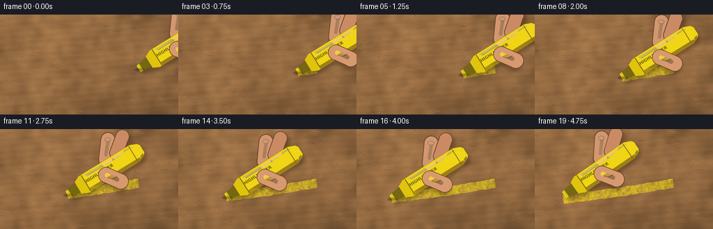
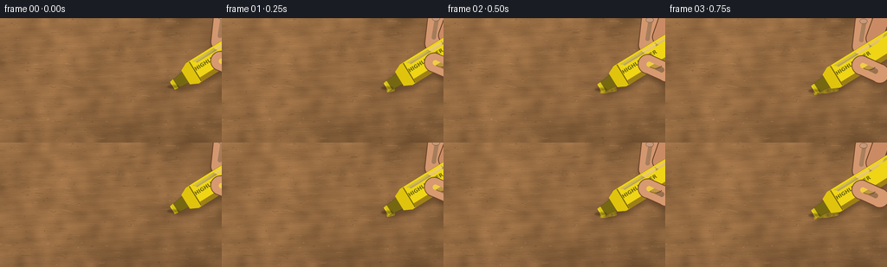

CODING AGENTS AS PIXEL WORLD MODELS
traex/GPT-5.6-Sol · phygen_034
点击播放 · 原生 RGB 像素
逐轮保存的候选
回放视频、检查图与代码变化。
每份候选均可单独播放。实际图片检查记录在下方工具轨迹中。
候选 01播放与检查图
点击播放 · 原生 RGB 像素


展开代码变化
--- 上一保存版本
+++ 本次保存版本
@@ -0,0 +1,261 @@
+from pathlib import Path
+import math
+import json
+import numpy as np
+import cv2
+from PIL import Image, ImageDraw, ImageFont, ImageFilter
+import artifact_io
+
+# Deterministic, supersampled procedural macro animation.
+ROOT = Path(__file__).resolve().parent
+spec = json.loads((ROOT / "task_spec.json").read_text())
+W, H, N = spec["width"], spec["height"], spec["frames"]
+S = 4
+WW, HH = W*S, H*S
+rng = np.random.default_rng(34017)
+
+
+def gaussian(a, sigma):
+ return cv2.GaussianBlur(a.astype(np.float32), (0, 0), sigma)
+
+# --- Kraft cardboard: mottled pulp, long fibers, pores and shallow ridges ---
+yy, xx = np.mgrid[0:HH, 0:WW].astype(np.float32)
+fine = rng.normal(0, 1, (HH, WW)).astype(np.float32)
+med = gaussian(fine, 5*S)
+broad = gaussian(fine, 21*S)
+med /= (med.std() + 1e-6)
+broad /= (broad.std() + 1e-6)
+# Directional paper grain and broad pressed-paper undulations.
+striations = (np.sin((yy + 0.075*xx)/S*0.69 + 0.30*np.sin(xx/S/29.0)) +
+ 0.45*np.sin((yy - 0.03*xx)/S*2.17))
+rough = 0.48*med + 0.32*broad + 0.20*striations + 0.16*fine
+light = 1.0 + 0.055*(1.0-xx/WW) + 0.035*(1.0-yy/HH)
+# Warm, matte brown cardboard under soft daylight.
+base_col = np.array([145., 104., 64.], np.float32)
+card = base_col[None, None, :] * light[..., None]
+card += rough[..., None] * np.array([12.0, 9.0, 6.0])[None, None, :]
+# Gentle lens falloff keeps the contact area central.
+dx = (xx-WW*.48)/(WW*.73); dy = (yy-HH*.50)/(HH*.92)
+vignette = np.clip(1.0 - 0.12*(dx*dx+dy*dy), .84, 1.03)
+card *= vignette[..., None]
+card = np.clip(card, 0, 255).astype(np.uint8)
+base_img = Image.fromarray(card, 'RGB')
+tex = Image.new('RGBA', (WW, HH), (0,0,0,0))
+td = ImageDraw.Draw(tex, 'RGBA')
+# Fine embedded fibers, predominantly horizontal, with occasional curls.
+for _ in range(920):
+ x = rng.uniform(-8, W+5)*S; y = rng.uniform(0, H)*S
+ length = rng.uniform(1.2, 11.5)*S
+ slope = rng.normal(0, .12)
+ wav = rng.normal(0, .55)*S
+ tone = int(rng.choice([-1,1]))
+ if tone < 0:
+ c = (61, 40, 23, int(rng.uniform(18, 55)))
+ else:
+ c = (232, 194, 135, int(rng.uniform(14, 45)))
+ width = max(1, int(rng.choice([.35,.45,.7,1.0], p=[.30,.36,.26,.08])*S))
+ pts = [(x, y), (x+length*.50, y+slope*length*.50+wav),
+ (x+length, y+slope*length)]
+ td.line(pts, fill=c, width=width, joint='curve')
+# Dark pinholes and bright raised flecks.
+for _ in range(315):
+ x = rng.uniform(0,W)*S; y=rng.uniform(0,H)*S
+ rx=rng.uniform(.18,1.05)*S; ry=rng.uniform(.12,.55)*S
+ if rng.random() < .68:
+ c=(54,35,20,int(rng.uniform(20,65)))
+ else:
+ c=(238,203,151,int(rng.uniform(18,52)))
+ td.ellipse((x-rx,y-ry,x+rx,y+ry), fill=c)
+# A few long, subtle torn pulp strands.
+for _ in range(23):
+ x=rng.uniform(-15,W)*S; y=rng.uniform(4,H-4)*S
+ ln=rng.uniform(13,42)*S
+ td.line([(x,y),(x+ln*.4,y+rng.uniform(-1,1)*S),(x+ln,y+rng.uniform(-.6,.6)*S)],
+ fill=(225,188,125,int(rng.uniform(12,28))), width=max(1,S//2))
+base_img = Image.alpha_composite(base_img.convert('RGBA'), tex)
+base_np = np.array(base_img.convert('RGB'))
+
+# Fixed pigment granulation: ink catches raised fibers and skips deep pores.
+grain0 = rng.normal(0,1,(HH,WW)).astype(np.float32)
+ink_grain = 0.78 + 0.16*gaussian(grain0, 1.0*S)/(gaussian(grain0,1.0*S).std()+1e-6)
+ink_grain += 0.055*fine
+ink_grain = np.clip(ink_grain, .28, 1.05)
+# Sparse, elongated pores where the nib cannot reach.
+pore_mask = np.ones((HH,WW), np.float32)
+pores = np.zeros((HH,WW), np.uint8)
+for _ in range(560):
+ px=int(rng.uniform(0,WW)); py=int(rng.uniform(0,HH))
+ rx=int(rng.uniform(.12,.65)*S); ry=max(1,int(rng.uniform(.08,.28)*S))
+ cv2.ellipse(pores,(px,py),(rx,ry),rng.uniform(-10,10),0,360,255,-1)
+pore_mask[pores>0] = rng.uniform(.20,.62, np.count_nonzero(pores))
+
+
+def path_point(u):
+ # A nearly straight pull across the sheet with tiny natural hand curvature.
+ return np.array([199.0 - 158.0*u,
+ 78.0 + 23.0*u + 1.35*math.sin(math.pi*u)], np.float32)
+
+
+def path_tangent(u):
+ d = np.array([-158.0, 23.0 + 1.35*math.pi*math.cos(math.pi*u)], np.float32)
+ return d / np.linalg.norm(d)
+
+
+def make_stroke(progress):
+ """Return RGBA-composited RGB cardboard with the deposited highlighter ink."""
+ if progress <= 0.001:
+ return base_np.copy()
+ count = max(4, int(150*progress)+1)
+ us = np.linspace(0, progress, count)
+ upper=[]; lower=[]
+ for u in us:
+ p=path_point(float(u))*S
+ tangent=path_tangent(float(u)); normal=np.array([-tangent[1], tangent[0]])
+ # Broad chisel stroke: subtly uneven parallel borders.
+ half=(6.25 + .28*math.sin(34*u) + .15*math.sin(91*u))*S
+ wobble=.18*math.sin(67*u)*S
+ upper.append(p + normal*(half+wobble))
+ lower.append(p - normal*(half-wobble*.6))
+ poly=np.array(upper+lower[::-1],np.int32)
+ geom=np.zeros((HH,WW),np.uint8)
+ cv2.fillPoly(geom,[poly],255,lineType=cv2.LINE_AA)
+ # Keep the broad body of the mark continuous but reveal the tooth of paper.
+ alpha=(geom.astype(np.float32)/255.0)*ink_grain*pore_mask
+ alpha=np.clip(alpha*.68,0,.72)
+ # Fresh ink near the current tip has a saturated, slightly wet band.
+ ufield=np.clip((199.0-xx/S)/158.0,0,1)
+ fresh=np.exp(-np.maximum(0,progress-ufield)*12.0)*(ufield <= progress+.01)
+ alpha=np.clip(alpha + (geom/255.0)*fresh*.055,0,.77)
+ out=base_np.astype(np.float32)
+ pigment=np.empty_like(out)
+ pigment[:]=np.array([246.,222.,24.],np.float32)
+ out=out*(1-alpha[...,None])+pigment*alpha[...,None]
+ # Fine brighter accumulation on the upper edge made by the chisel corner.
+ edge=np.zeros((HH,WW),np.uint8)
+ cv2.polylines(edge,[np.array(upper,np.int32)],False,190,max(1,int(.62*S)),cv2.LINE_AA)
+ ea=(edge.astype(np.float32)/255.0)*.19*ink_grain
+ out=out*(1-ea[...,None])+np.array([255.,239.,48.])*ea[...,None]
+ return np.clip(out,0,255).astype(np.uint8)
+
+
+def loc(p, axis, s, r):
+ perp=np.array([-axis[1],axis[0]])
+ return tuple(((p + axis*s + perp*r)*S).round().astype(int))
+
+
+def poly_local(p, axis, coords):
+ return [loc(p,axis,s,r) for s,r in coords]
+
+
+def capsule(draw, p1, p2, width, fill, outline=None, ow=0):
+ p1=np.array(p1,float); p2=np.array(p2,float); w=float(width)
+ if outline is not None and ow>0:
+ draw.line([tuple(p1),tuple(p2)],fill=outline,width=int(w+2*ow))
+ rr=(w+2*ow)/2
+ for q in (p1,p2): draw.ellipse((q[0]-rr,q[1]-rr,q[0]+rr,q[1]+rr),fill=outline)
+ draw.line([tuple(p1),tuple(p2)],fill=fill,width=int(w))
+ rr=w/2
+ for q in (p1,p2): draw.ellipse((q[0]-rr,q[1]-rr,q[0]+rr,q[1]+rr),fill=fill)
+
+
+def add_shadow(img, p, axis):
+ mask=Image.new('L',(WW,HH),0); d=ImageDraw.Draw(mask)
+ # Marker and gripping fingers as one soft contact/cast shadow.
+ d.polygon(poly_local(p+np.array([2.8,3.3]),axis,[(0,-6),(0,6),(25,14),(120,14),(125,9),(125,-9),(25,-14)]),fill=205)
+ for a,b,w in [((72,-15),(91,-36),20),((91,-14),(112,-28),19),((70,22),(60,3),22)]:
+ capsule(d,loc(p+np.array([3.,4.]),axis,*a),loc(p+np.array([3.,4.]),axis,*b),w*S,210)
+ mask=mask.filter(ImageFilter.GaussianBlur(2.7*S))
+ sh=Image.new('RGBA',(WW,HH),(34,20,8,0)); sh.putalpha(mask.point(lambda v:int(v*.42)))
+ return Image.alpha_composite(img,sh)
+
+
+def draw_fingers_behind(layer, p, axis):
+ d=ImageDraw.Draw(layer,'RGBA')
+ # Two fingertips descending from the upper-right, behind the barrel.
+ skin_outline=(105,63,39,210); skin=(211,151,111,255)
+ capsule(d,loc(p,axis,73,-14),loc(p,axis,91,-37),19*S,skin,skin_outline,1.1*S)
+ capsule(d,loc(p,axis,91,-14),loc(p,axis,111,-30),18*S,(202,139,100,255),skin_outline,1.0*S)
+ # Warm highlight along the lit side of the index finger.
+ capsule(d,loc(p,axis,77,-20),loc(p,axis,90,-35),5*S,(240,187,145,120))
+ # Index fingernail, small and naturally muted.
+ nd=ImageDraw.Draw(layer,'RGBA')
+ q=loc(p,axis,91,-37)
+ nd.ellipse((q[0]-5*S,q[1]-3*S,q[0]+4*S,q[1]+3*S),fill=(236,185,157,180),outline=(151,98,72,130),width=max(1,S//2))
+
+
+def draw_marker(layer, p, axis):
+ d=ImageDraw.Draw(layer,'RGBA')
+ outline=(105,86,12,255)
+ # Felt chisel nib, visibly darkened by absorbed fluorescent ink.
+ nib=poly_local(p,axis,[(0,-5.4),(0,5.4),(17,7.2),(25,8.0),(27,-8.0),(17,-7.2)])
+ d.polygon(nib,fill=(118,104,19,255),outline=(75,63,14,255))
+ d.polygon(poly_local(p,axis,[(0,-5.4),(0,5.4),(4.2,5.8),(4.2,-5.8)]),fill=(218,196,20,255))
+ d.line([loc(p,axis,.3,-4.6),loc(p,axis,.3,4.6)],fill=(255,229,41,235),width=max(1,S))
+ # Plastic nose and full yellow barrel.
+ bodycoords=[(18,-9.5),(27,-14.0),(113,-14.0),(123,-10.0),(126,-6.0),(126,6.0),(123,10.0),(113,14.0),(27,14.0),(18,9.5)]
+ d.polygon(poly_local(p,axis,bodycoords),fill=(239,213,21,255),outline=outline)
+ # Collar above the felt.
+ d.polygon(poly_local(p,axis,[(18,-9.5),(27,-13.8),(32,-13.8),(32,13.8),(27,13.8),(18,9.5)]),fill=(224,195,13,255))
+ d.line([loc(p,axis,31,-13.2),loc(p,axis,31,13.2)],fill=(112,96,10,230),width=max(1,S))
+ # Faceted lower flank and soft glossy stripe make the plastic dimensional.
+ d.polygon(poly_local(p,axis,[(32,8.7),(116,8.7),(123,6),(123,10),(113,14),(32,14)]),fill=(190,160,8,155))
+ d.polygon(poly_local(p,axis,[(34,-11.8),(111,-11.8),(116,-9.2),(37,-9.2)]),fill=(255,242,82,155))
+ d.line([loc(p,axis,38,-8.5),loc(p,axis,94,-8.5)],fill=(255,250,126,115),width=max(1,2*S))
+ # Rear seam/details.
+ d.line([loc(p,axis,111,-13.2),loc(p,axis,111,13.2)],fill=(144,119,7,180),width=max(1,S))
+ d.line([loc(p,axis,117,-10),loc(p,axis,117,10)],fill=(253,229,42,230),width=max(1,S))
+ # A concise printed product label, aligned along the barrel.
+ try:
+ font=ImageFont.truetype('/usr/share/fonts/truetype/dejavu/DejaVuSans-Bold.ttf',6*S)
+ except Exception:
+ font=ImageFont.load_default()
+ label=Image.new('RGBA',(84*S,14*S),(0,0,0,0)); ld=ImageDraw.Draw(label)
+ ld.text((2*S,2*S),'HIGHLIGHTER',font=font,fill=(76,72,14,205),stroke_width=0)
+ label=label.rotate(32,Image.Resampling.BICUBIC,expand=True)
+ c=np.array(loc(p,axis,72,-.8)); layer.alpha_composite(label,(int(c[0]-label.width/2),int(c[1]-label.height/2)))
+
+
+def draw_thumb(layer,p,axis):
+ d=ImageDraw.Draw(layer,'RGBA')
+ # Thumb wraps over the lower side of the barrel, clearly implying use by hand.
+ capsule(d,loc(p,axis,75,24),loc(p,axis,62,5),21*S,(215,153,111,255),(107,65,42,220),1.0*S)
+ capsule(d,loc(p,axis,72,19),loc(p,axis,63,6),6*S,(242,189,145,90))
+ # Small crease at the gripping joint.
+ d.arc((loc(p,axis,69,10)[0]-8*S,loc(p,axis,69,10)[1]-5*S,
+ loc(p,axis,69,10)[0]+8*S,loc(p,axis,69,10)[1]+5*S),20,145,fill=(132,82,56,120),width=max(1,S))
+
+frames=[]
+for i in range(N):
+ # Frames 0..17 make one deliberate pull; final two lift clear of the completed line.
+ progress=min(i/17.0,1.0)
+ paper=make_stroke(progress)
+ canvas=Image.fromarray(paper,'RGB').convert('RGBA')
+ contact=path_point(progress)
+ lift=max(0.0,(i-17)/2.0)
+ # Nib separates vertically in the final half-second; its shadow softens visibly.
+ p=contact + np.array([1.2*lift,-6.0*lift],np.float32)
+ ang=-32.0 - 3.0*lift + .45*math.sin(i*.72)
+ axis=np.array([math.cos(math.radians(ang)),math.sin(math.radians(ang))],np.float32)
+ canvas=add_shadow(canvas,p,axis)
+ back=Image.new('RGBA',(WW,HH),(0,0,0,0)); draw_fingers_behind(back,p,axis)
+ canvas=Image.alpha_composite(canvas,back)
+ marker=Image.new('RGBA',(WW,HH),(0,0,0,0)); draw_marker(marker,p,axis)
+ canvas=Image.alpha_composite(canvas,marker)
+ thumb=Image.new('RGBA',(WW,HH),(0,0,0,0)); draw_thumb(thumb,p,axis)
+ canvas=Image.alpha_composite(canvas,thumb)
+ # Tight local contact shadow beneath the chisel edge while pressed down.
+ if lift < .35:
+ cm=Image.new('L',(WW,HH),0); cd=ImageDraw.Draw(cm)
+ q=loc(p+np.array([1.,1.2]),axis,0,0)
+ cd.ellipse((q[0]-7*S,q[1]-2*S,q[0]+7*S,q[1]+2*S),fill=100)
+ cm=cm.filter(ImageFilter.GaussianBlur(.8*S))
+ cs=Image.new('RGBA',(WW,HH),(38,24,7,0)); cs.putalpha(cm)
+ # This tiny shadow belongs below the nib, but low alpha makes overlay convincing.
+ canvas=Image.alpha_composite(canvas,cs)
+ # Downsample once for clean antialiasing and preserve detailed cardboard tooth.
+ canvas=canvas.convert('RGB').resize((W,H),Image.Resampling.LANCZOS)
+ frames.append(np.asarray(canvas,dtype=np.uint8))
+
+frames=np.stack(frames,axis=0)
+artifact_io.save(frames,ROOT)
+print(f"saved {frames.shape} {frames.dtype}; ranges {frames.min()}..{frames.max()}")
可观测工具轨迹
实际执行的命令与返回图片。
命令 1exit 0
/bin/bash -lc "cat prompt.txt && printf '\\n--- GENERATION_RULES.md ---\\n' && cat GENERATION_RULES.md"
命令 2exit 0
/bin/bash -lc "cat task_spec.json && printf '\\n--- FILES ---\\n' && find . -maxdepth 2 -type f -printf '%p\\n' | sort"
命令 3exit 0
/bin/bash -lc "ffmpeg -version | head -n 2; python3 --version; python3 - <<'PY' mods=['numpy','PIL','cv2','imageio','moviepy','cairo','pygame'] for m in mods: try: x=__import__(m); print(m,'OK',getattr(x,'__version__','')) except Exception as e: print(m,'NO',str(e)[:80]) PY"
命令 4exit 0
/bin/bash -lc "sed -n '1,240p' artifact_io.py"
命令 5exit 0
/bin/bash -lc "cat > generate.py <<'PY'
from pathlib import Path
import math
import json
import numpy as np
import cv2
from PIL import Image, ImageDraw, ImageFont, ImageFilter
import artifact_io
# Deterministic, supersampled procedural macro animation.
ROOT = Path(__file__).resolve().parent
spec = json.loads((ROOT / \"task_spec.json\").read_text())
W, H, N = spec[\"width\"], spec[\"height\"], spec[\"frames\"]
S = 4
WW, HH = W*S, H*S
rng = np.random.default_rng(34017)
def gaussian(a, sigma):
return cv2.GaussianBlur(a.astype(np.float32), (0, 0), sigma)
# --- Kraft cardboard: mottled pulp, long fibers, pores and shallow ridges ---
yy, xx = np.mgrid[0:HH, 0:WW].astype(np.float32)
fine = rng.normal(0, 1, (HH, WW)).astype(np.float32)
med = gaussian(fine, 5*S)
broad = gaussian(fine, 21*S)
med /= (med.std() + 1e-6)
broad /= (broad.std() + 1e-6)
# Directional paper grain and broad pressed-paper undulations.
striations = (np.sin((yy + 0.075*xx)/S*0.69 + 0.30*np.sin(xx/S/29.0)) +
0.45*np.sin((yy - 0.03*xx)/S*2.17))
rough = 0.48*med + 0.32*broad + 0.20*striations + 0.16*fine
light = 1.0 + 0.055*(1.0-xx/WW) + 0.035*(1.0-yy/HH)
# Warm, matte brown cardboard under soft daylight.
base_col = np.array([145., 104., 64.], np.float32)
card = base_col[None, None, :] * light[..., None]
card += rough[..., None] * np.array([12.0, 9.0, 6.0])[None, None, :]
# Gentle lens falloff keeps the contact area central.
dx = (xx-WW*.48)/(WW*.73); dy = (yy-HH*.50)/(HH*.92)
vignette = np.clip(1.0 - 0.12*(dx*dx+dy*dy), .84, 1.03)
card *= vignette[..., None]
card = np.clip(card, 0, 255).astype(np.uint8)
base_img = Image.fromarray(card, 'RGB')
tex = Image.new('RGBA', (WW, HH), (0,0,0,0))
td = ImageDraw.Draw(tex, 'RGBA')
# Fine embedded fibers, predominantly horizontal, with occasional curls.
for _ in range(920):
x = rng.uniform(-8, W+5)*S; y = rng.uniform(0, H)*S
length = rng.uniform(1.2, 11.5)*S
slope = rng.normal(0, .12)
wav = rng.normal(0, .55)*S
tone = int(rng.choice([-1,1]))
if tone < 0:
c = (61, 40, 23, int(rng.uniform(18, 55)))
else:
c = (232, 194, 135, int(rng.uniform(14, 45)))
width = max(1, int(rng.choice([.35,.45,.7,1.0], p=[.30,.36,.26,.08])*S))
pts = [(x, y), (x+length*.50, y+slope*length*.50+wav),
(x+length, y+slope*length)]
td.line(pts, fill=c, width=width, joint='curve')
# Dark pinholes and bright raised flecks.
for _ in range(315):
x = rng.uniform(0,W)*S; y=rng.uniform(0,H)*S
rx=rng.uniform(.18,1.05)*S; ry=rng.uniform(.12,.55)*S
if rng.random() < .68:
c=(54,35,20,int(rng.uniform(20,65)))
else:
c=(238,203,151,int(rng.uniform(18,52)))
td.ellipse((x-rx,y-ry,x+rx,y+ry), fill=c)
# A few long, subtle torn pulp strands.
for _ in range(23):
x=rng.uniform(-15,W)*S; y=rng.uniform(4,H-4)*S
ln=rng.uniform(13,42)*S
td.line([(x,y),(x+ln*.4,y+rng.uniform(-1,1)*S),(x+ln,y+rng.uniform(-.6,.6)*S)],
fill=(225,188,125,int(rng.uniform(12,28))), width=max(1,S//2))
base_img = Image.alpha_composite(base_img.convert('RGBA'), tex)
base_np = np.array(base_img.convert('RGB'))
# Fixed pigment granulation: ink catches raised fibers and skips deep pores.
grain0 = rng.normal(0,1,(HH,WW)).astype(np.float32)
ink_grain = 0.78 + 0.16*gaussian(grain0, 1.0*S)/(gaussian(grain0,1.0*S).std()+1e-6)
ink_grain += 0.055*fine
ink_grain = np.clip(ink_grain, .28, 1.05)
# Sparse, elongated pores where the nib cannot reach.
pore_mask = np.ones((HH,WW), np.float32)
pores = np.zeros((HH,WW), np.uint8)
for _ in range(560):
px=int(rng.uniform(0,WW)); py=int(rng.uniform(0,HH))
rx=int(rng.uniform(.12,.65)*S); ry=max(1,int(rng.uniform(.08,.28)*S))
cv2.ellipse(pores,(px,py),(rx,ry),rng.uniform(-10,10),0,360,255,-1)
pore_mask[pores>0] = rng.uniform(.20,.62, np.count_nonzero(pores))
def path_point(u):
# A nearly straight pull across the sheet with tiny natural hand curvature.
return np.array([199.0 - 158.0*u,
78.0 + 23.0*u + 1.35*math.sin(math.pi*u)], np.float32)
def path_tangent(u):
d = np.array([-158.0, 23.0 + 1.35*math.pi*math.cos(math.pi*u)], np.float32)
return d / np.linalg.norm(d)
def make_stroke(progress):
\"\"\"Return RGBA-composited RGB cardboard with the deposited highlighter ink.\"\"\"
if progress <= 0.001:
return base_np.copy()
count = max(4, int(150*progress)+1)
us = np.linspace(0, progress, count)
upper=[]; lower=[]
for u in us:
p=path_point(float(u))*S
tangent=path_tangent(float(u)); normal=np.array([-tangent[1], tangent[0]])
# Broad chisel stroke: subtly uneven parallel borders.
half=(6.25 + .28*math.sin(34*u) + .15*math.sin(91*u))*S
wobble=.18*math.sin(67*u)*S
upper.append(p + normal*(half+wobble))
lower.append(p - normal*(half-wobble*.6))
poly=np.array(upper+lower[::-1],np.int32)
geom=np.zeros((HH,WW),np.uint8)
cv2.fillPoly(geom,[poly],255,lineType=cv2.LINE_AA)
# Keep the broad body of the mark continuous but reveal the tooth of paper.
alpha=(geom.astype(np.float32)/255.0)*ink_grain*pore_mask
alpha=np.clip(alpha*.68,0,.72)
# Fresh ink near the current tip has a saturated, slightly wet band.
ufield=np.clip((199.0-xx/S)/158.0,0,1)
fresh=np.exp(-np.maximum(0,progress-ufield)*12.0)*(ufield <= progress+.01)
alpha=np.clip(alpha + (geom/255.0)*fresh*.055,0,.77)
out=base_np.astype(np.float32)
pigment=np.empty_like(out)
pigment[:]=np.array([246.,222.,24.],np.float32)
out=out*(1-alpha[...,None])+pigment*alpha[...,None]
# Fine brighter accumulation on the upper edge made by the chisel corner.
edge=np.zeros((HH,WW),np.uint8)
cv2.polylines(edge,[np.array(upper,np.int32)],False,190,max(1,int(.62*S)),cv2.LINE_AA)
ea=(edge.astype(np.float32)/255.0)*.19*ink_grain
out=out*(1-ea[...,None])+np.array([255.,239.,48.])*ea[...,None]
return np.clip(out,0,255).astype(np.uint8)
def loc(p, axis, s, r):
perp=np.array([-axis[1],axis[0]])
return tuple(((p + axis*s + perp*r)*S).round().astype(int))
def poly_local(p, axis, coords):
return [loc(p,axis,s,r) for s,r in coords]
def capsule(draw, p1, p2, width, fill, outline=None, ow=0):
p1=np.array(p1,float); p2=np.array(p2,float); w=float(width)
if outline is not None and ow>0:
draw.line([tuple(p1),tuple(p2)],fill=outline,width=int(w+2*ow))
rr=(w+2*ow)/2
for q in (p1,p2): draw.ellipse((q[0]-rr,q[1]-rr,q[0]+rr,q[1]+rr),fill=outline)
draw.line([tuple(p1),tuple(p2)],fill=fill,width=int(w))
rr=w/2
for q in (p1,p2): draw.ellipse((q[0]-rr,q[1]-rr,q[0]+rr,q[1]+rr),fill=fill)
def add_shadow(img, p, axis):
mask=Image.new('L',(WW,HH),0); d=ImageDraw.Draw(mask)
# Marker and gripping fingers as one soft contact/cast shadow.
d.polygon(poly_local(p+np.array([2.8,3.3]),axis,[(0,-6),(0,6),(25,14),(120,14),(125,9),(125,-9),(25,-14)]),fill=205)
for a,b,w in [((72,-15),(91,-36),20),((91,-14),(112,-28),19),((70,22),(60,3),22)]:
capsule(d,loc(p+np.array([3.,4.]),axis,*a),loc(p+np.array([3.,4.]),axis,*b),w*S,210)
mask=mask.filter(ImageFilter.GaussianBlur(2.7*S))
sh=Image.new('RGBA',(WW,HH),(34,20,8,0)); sh.putalpha(mask.point(lambda v:int(v*.42)))
return Image.alpha_composite(img,sh)
def draw_fingers_behind(layer, p, axis):
d=ImageDraw.Draw(layer,'RGBA')
# Two fingertips descending from the upper-right, behind the barrel.
skin_outline=(105,63,39,210); skin=(211,151,111,255)
capsule(d,loc(p,axis,73,-14),loc(p,axis,91,-37),19*S,skin,skin_outline,1.1*S)
capsule(d,loc(p,axis,91,-14),loc(p,axis,111,-30),18*S,(202,139,100,255),skin_outline,1.0*S)
# Warm highlight along the lit side of the index finger.
capsule(d,loc(p,axis,77,-20),loc(p,axis,90,-35),5*S,(240,187,145,120))
# Index fingernail, small and naturally muted.
nd=ImageDraw.Draw(layer,'RGBA')
q=loc(p,axis,91,-37)
nd.ellipse((q[0]-5*S,q[1]-3*S,q[0]+4*S,q[1]+3*S),fill=(236,185,157,180),outline=(151,98,72,130),width=max(1,S//2))
def draw_marker(layer, p, axis):
d=ImageDraw.Draw(layer,'RGBA')
outline=(105,86,12,255)
# Felt chisel nib, visibly darkened by absorbed fluorescent ink.
nib=poly_local(p,axis,[(0,-5.4),(0,5.4),(17,7.2),(25,8.0),(27,-8.0),(17,-7.2)])
d.polygon(nib,fill=(118,104,19,255),outline=(75,63,14,255))
d.polygon(poly_local(p,axis,[(0,-5.4),(0,5.4),(4.2,5.8),(4.2,-5.8)]),fill=(218,196,20,255))
d.line([loc(p,axis,.3,-4.6),loc(p,axis,.3,4.6)],fill=(255,229,41,235),width=max(1,S))
# Plastic nose and full yellow barrel.
bodycoords=[(18,-9.5),(27,-14.0),(113,-14.0),(123,-10.0),(126,-6.0),(126,6.0),(123,10.0),(113,14.0),(27,14.0),(18,9.5)]
d.polygon(poly_local(p,axis,bodycoords),fill=(239,213,21,255),outline=outline)
# Collar above the felt.
d.polygon(poly_local(p,axis,[(18,-9.5),(27,-13.8),(32,-13.8),(32,13.8),(27,13.8),(18,9.5)]),fill=(224,195,13,255))
d.line([loc(p,axis,31,-13.2),loc(p,axis,31,13.2)],fill=(112,96,10,230),width=max(1,S))
# Faceted lower flank and soft glossy stripe make the plastic dimensional.
d.polygon(poly_local(p,axis,[(32,8.7),(116,8.7),(123,6),(123,10),(113,14),(32,14)]),fill=(190,160,8,155))
d.polygon(poly_local(p,axis,[(34,-11.8),(111,-11.8),(116,-9.2),(37,-9.2)]),fill=(255,242,82,155))
d.line([loc(p,axis,38,-8.5),loc(p,axis,94,-8.5)],fill=(255,250,126,115),width=max(1,2*S))
# Rear seam/details.
d.line([loc(p,axis,111,-13.2),loc(p,axis,111,13.2)],fill=(144,119,7,180),width=max(1,S))
d.line([loc(p,axis,117,-10),loc(p,axis,117,10)],fill=(253,229,42,230),width=max(1,S))
# A concise printed product label, aligned along the barrel.
try:
font=ImageFont.truetype('/usr/share/fonts/truetype/dejavu/DejaVuSans-Bold.ttf',6*S)
except Exception:
font=ImageFont.load_default()
label=Image.new('RGBA',(84*S,14*S),(0,0,0,0)); ld=ImageDraw.Draw(label)
ld.text((2*S,2*S),'HIGHLIGHTER',font=font,fill=(76,72,14,205),stroke_width=0)
label=label.rotate(32,Image.Resampling.BICUBIC,expand=True)
c=np.array(loc(p,axis,72,-.8)); layer.alpha_composite(label,(int(c[0]-label.width/2),int(c[1]-label.height/2)))
def draw_thumb(layer,p,axis):
d=ImageDraw.Draw(layer,'RGBA')
# Thumb wraps over the lower side of the barrel, clearly implying use by hand.
capsule(d,loc(p,axis,75,24),loc(p,axis,62,5),21*S,(215,153,111,255),(107,65,42,220),1.0*S)
capsule(d,loc(p,axis,72,19),loc(p,axis,63,6),6*S,(242,189,145,90))
# Small crease at the gripping joint.
d.arc((loc(p,axis,69,10)[0]-8*S,loc(p,axis,69,10)[1]-5*S,
loc(p,axis,69,10)[0]+8*S,loc(p,axis,69,10)[1]+5*S),20,145,fill=(132,82,56,120),width=max(1,S))
frames=[]
for i in range(N):
# Frames 0..17 make one deliberate pull; final two lift clear of the completed line.
progress=min(i/17.0,1.0)
paper=make_stroke(progress)
canvas=Image.fromarray(paper,'RGB').convert('RGBA')
contact=path_point(progress)
lift=max(0.0,(i-17)/2.0)
# Nib separates vertically in the final half-second; its shadow softens visibly.
p=contact + np.array([1.2*lift,-6.0*lift],np.float32)
ang=-32.0 - 3.0*lift + .45*math.sin(i*.72)
axis=np.array([math.cos(math.radians(ang)),math.sin(math.radians(ang))],np.float32)
canvas=add_shadow(canvas,p,axis)
back=Image.new('RGBA',(WW,HH),(0,0,0,0)); draw_fingers_behind(back,p,axis)
canvas=Image.alpha_composite(canvas,back)
marker=Image.new('RGBA',(WW,HH),(0,0,0,0)); draw_marker(marker,p,axis)
canvas=Image.alpha_composite(canvas,marker)
thumb=Image.new('RGBA',(WW,HH),(0,0,0,0)); draw_thumb(thumb,p,axis)
canvas=Image.alpha_composite(canvas,thumb)
# Tight local contact shadow beneath the chisel edge while pressed down.
if lift < .35:
cm=Image.new('L',(WW,HH),0); cd=ImageDraw.Draw(cm)
q=loc(p+np.array([1.,1.2]),axis,0,0)
cd.ellipse((q[0]-7*S,q[1]-2*S,q[0]+7*S,q[1]+2*S),fill=100)
cm=cm.filter(ImageFilter.GaussianBlur(.8*S))
cs=Image.new('RGBA',(WW,HH),(38,24,7,0)); cs.putalpha(cm)
# This tiny shadow belongs below the nib, but low alpha makes overlay convincing.
canvas=Image.alpha_composite(canvas,cs)
# Downsample once for clean antialiasing and preserve detailed cardboard tooth.
canvas=canvas.convert('RGB').resize((W,H),Image.Resampling.LANCZOS)
frames.append(np.asarray(canvas,dtype=np.uint8))
frames=np.stack(frames,axis=0)
artifact_io.save(frames,ROOT)
print(f\"saved {frames.shape} {frames.dtype}; ranges {frames.min()}..{frames.max()}\")
PY
python3 generate.py"命令 6exit 0
/bin/bash -lc 'ls -lh pixels.npz index.html inspection.png transition_check.png frames/00.png frames/19.png generate.py && python3 -m py_compile generate.py artifact_io.py'
命令 7exit 0
/bin/bash -lc "python3 - <<'PY'
import numpy as np
from PIL import Image
from pathlib import Path
f=np.stack([np.array(Image.open(p).convert('RGB')) for p in sorted(Path('frames').glob('*.png'))])
print('shape/dtype',f.shape,f.dtype)
print('frame mean RGB')
for i,x in enumerate(f):
print(i, np.round(x.mean((0,1)),2), 'delta', 0 if i==0 else np.abs(x.astype(int)-f[i-1].astype(int)).mean(), 'changed',0 if i==0 else np.mean(np.any(x"'!=f[i-1],2)))
# yellow-ish pigment pixels excluding vivid plastic highlights via location in left/lower canvas
for i in [0,3,6,9,12,15,17,19]:
x=f[i]; m=(x[:,:,0]>155)&(x[:,:,1]>135)&(x[:,:,2]<75)
print('"'yellow',i,int(m.sum()))
print('npz',np.load('pixels.npz')['pixels'].shape,np.load('pixels.npz')['pixels'].dtype)
PY"保存候选 1 份；完成命令 7 次；可验证图片返回 0 张。原始 API 响应与完整日志保留在本地。